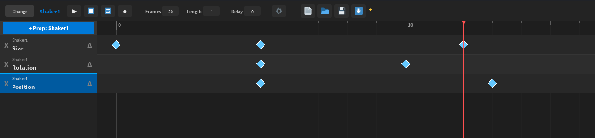

Cascade UI: The Ultimate UI Animation System
Cascade UI is a powerful Roblox Studio plugin built to solve the limitations of traditional UI animation. It provides a real-time WYSIWYG editor and a highly optimized, conflict-free runtime library, the `AnimationService`.
Core Philosophy: Compositor Engine
Unlike standard `TweenService` which locks properties, Cascade's `AnimationService` uses a compositor engine. This allows multiple tracks and animations to influence the same object simultaneously (e.g., a 'Hover' wobble on a 'Slide In' movement) without fighting each other.

-- Requiring the Animation Service from your game's storage
local AnimationService = require(game.ReplicatedStorage.CascadeAnimations.AnimationService)API Reference: AnimationService
The core runtime module is highly optimized for performance and is designed to be required and used directly in your live game environment.
.Preprocess(Config)
Converts raw AnimationConfig data (loaded from the editor) into an optimized ProcessedAnimation object ready for immediate playback. This is an **optional but highly recommended** step for performance.
Why Preprocess?
- It sorts keyframes, resolves property paths (e.g.,
UDim2.X.Scale), and validates the structure. - By running
.Preprocess()once, you avoid running these expensive checks repeatedly inside.PlayBatch()or sequential.Play()calls, saving CPU time.
local MyAnimData = require(game.ReplicatedStorage.CascadeAnimations.MyAnim)
-- 1. Preprocess once (optimized for bulk use)
local ProcessedAnim = AnimationService.Preprocess(MyAnimData)
-- 2. Use the optimized data for all subsequent calls
AnimationService.Play(Button1, ProcessedAnim)
AnimationService.PlayBatch(TileList, ProcessedAnim, { Stagger = 0.1 }).Play(Instance, ConfigOrProcessed, Options)
Starts an animation on a single instance. Returns a custom Signal object for completion tracking.
Arguments:
Instance: The GuiObject or Model to animate.ConfigOrProcessed: The animation data (either raw or pre-processed).Options?: Table ofPlayOptionsto customize playback (see section below).
Example: Connecting a hover animation with reverse playback:

.Stop(Instance)
Immediately halts all active Cascade animations running on the given instance.
-- Stop the animation on MyButton, preserving its current position
AnimationService.Stop(MyButton)
-- Stop animations on multiple objects (also available: .StopBatch({Instances}))
AnimationService.StopBatch({Button1, Button2, Button3}).SetTime(Instance, ConfigOrProcessed, Time)
Instantly snaps the animated object to the exact visual state defined at a specific timestamp (in seconds).
-- Snap 'MyButton' 1.5 seconds into the animation
AnimationService.SetTime(MyButton, MyAnimData, 1.5)
-- Snap to start (also available: .SetToStart(Instance, Config))
AnimationService.SetToStart(MyButton, MyAnimData).PlayBatch(Instances, ConfigOrProcessed, Options)
Plays an animation across a collection of instances. Supports staggering for sequenced effects.
Key Option:
Stagger: Time in seconds to delay the start of each subsequent animation.
Example of staggered UI elements appearing in sequence:

Understanding PlayOptions
The optional Options table passed to .Play() and .PlayBatch() determines key behaviors for the animation lifecycle.
Loop: boolean | number
If true, loops infinitely. If a number (e.g., 3), loops that many times.
Delay: number
Initial delay (in seconds) before the animation begins playing.
Stagger: number
Only applicable to .PlayBatch(). Specifies the delay (in seconds) between the start of each instance's animation.
Reverse: boolean
If true, the animation plays backward from the end keyframe to the start keyframe.
Reset: boolean
If true, the object's properties will revert to the exact values they held BEFORE .Play() was called when the animation completes or is stopped.
ResetToStart: boolean
If true, the object will snap to the values defined at **Frame 0** of the animation data when the animation completes or is stopped.
Editor Features & Workflow
Robust Workflow Management
- Auto-Recorder: Record keyframes simply by clicking the record button and changing properties in the Roblox Explorer/Properties window.
- Strict State Separation: When you start editing an object, the plugin captures its original state. When you **deselect** the object, it is perfectly restored to its pre-animation appearance.
-
Multi-Select & Drag: Select multiple keyframes and move them as a group while preserving their relative timing.

Optimization and Control
-
Relative Mode (∆): Toggle any track to be relative to the object's current runtime position, allowing easy layering of effects (e.g., a global menu slide + a localized button pulse).

-
Smart Inspector: Edit keyframe values using complex syntax (e.g.,
{0.5, 10}for UDim) and the system automatically coerces types, preventing runtime errors.
-
Granular Sub-Property Control: Animate specific parts of complex types, such as animating only
Size.X.Scale.Visually separating complex properties allows for fine-tuned staggered effects on individual components.
Changelog
Roadmap & Future Development
This plugin will be continuously updated with new features and fixes. Here are some of the planned features:
Animation Events (In Progress)
Define custom markers on the timeline (e.g., "Hit Marker" or "Play Sound") that fire a corresponding event in your Lua scripts. This allows you to precisely synchronize game logic with your animations.
Expanded Component Support
Full animation support for advanced `UIBase` modifiers and layout components, including:
UIGradientUIStrokeUICorner
New Data Type Support
Implementing interpolation logic for complex data types not yet supported by the runtime compositor, such as NumberSequence and ColorSequence.